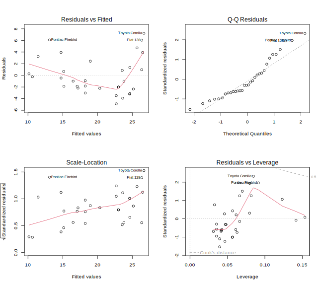
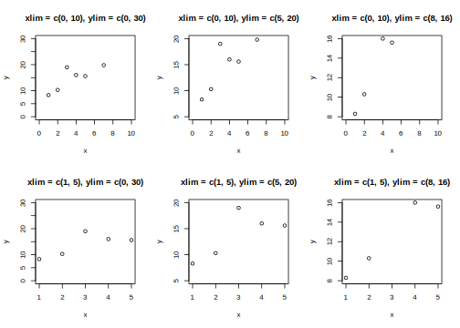
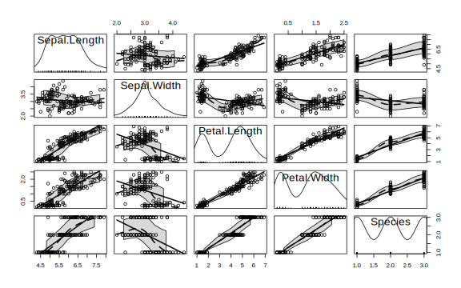

10.2 고수준 그래프 함수
10.2.1 plot() 함수
- R의 가장 대표적인 2차원 고수준 그래프 출력 함수
plot()의 가장 일반적인 용도는 그래프 장치를 설정(축, 값의 범위 등) 후 저수준 그래프 함수(축, 선, 점, 면 등)를 그래프 장치에 적용- 데이터가 저장되어 있는 객체(벡터, 행렬, 데이터 프레임 등) 하나 이상을 함수의 인수(argument)로 사용
- 데이터의 클래스에 따라 출력되는 그래프 결과가 다름 \(\rightarrow\)
methods(plot)을 통해plot()함수가 적용되는 클래스 확인 가능
#각 클래스에 적용되는 plot() 함수 리스트
methods(plot) [1] plot,ANY-method plot,color-method plot.acf*
[4] plot.data.frame* plot.decomposed.ts* plot.default
[7] plot.dendrogram* plot.density* plot.ecdf
[10] plot.factor* plot.formula* plot.function
[13] plot.ggplot* plot.gtable* plot.hcl_palettes*
[16] plot.hclust* plot.histogram* plot.HoltWinters*
[19] plot.isoreg* plot.lm* plot.medpolish*
[22] plot.mlm* plot.ppr* plot.prcomp*
[25] plot.princomp* plot.profile.nls* plot.R6*
[28] plot.raster* plot.spec* plot.stepfun
[31] plot.stl* plot.table* plot.trans*
[34] plot.ts plot.tskernel* plot.TukeyHSD*
see '?methods' for accessing help and source code#예시 1: 객체 클래스가 데이터 프레임인 경우
# mtcars 데이터 예시
class(mtcars)[1] "data.frame"plot(mtcars)# 예시2: lm()으로 도출된 객체(list)
## 연비(mpg)를 종속 변수, 배기량(disp)을 독립변수로 한 회귀모형
## lm() 함수 사용 -> 객체 클래스는 lm
mod <- lm(mpg ~ disp, data = mtcars)
class(mod)[1] "lm"par(mfrow = c(2, 2)) # 4개 도표를 한 화면에 표시(2행, 2열)
plot(mod)
dev.off() # 활성화된 그래프 장치 닫기null device
1 
# 예시3: 테이블 객체
class(Titanic)[1] "table"plot(Titanic)- 객체의 클래스가 벡터나 행렬인 경우, 객체에 저장된 데이터를 2차원 평면(x-y 좌표)에 출력
# 예시1: 데이터 객체를 하나만 인수로 받는 경우
# -> x축은 객체의 색인이고, x의 데이터는 y 좌표에 매핑
x <- mtcars$disp
y <- mtcars$mpg
plot(x); plot(y)
# 두개의 객체를 인수로 받은 경우
# -> 2차원 산점도 출력
plot(x, y)plot()함수의 세부 옵션
plot(
x, # x 축에 대응하는 데이터 객체
y, # y 축에 대응하는 데이터 객체
type, # 그래프 타입(예시 참조)
main, # 제목
sub, # 부제목
xlim, ylim, # x, y 축 범위 지정
xlab, ylab, # x-y 축 이름
lty, # 선 모양
pch, # 점 모양
cex, # 점 및 텍스트 크기
lwd, # 선 굵기
col # 색상
)type인수: 그래프 타입 지정
# BOD 데이터셋 이용
x <- BOD$Time; y <- BOD$demand
x; y[1] 1 2 3 4 5 7[1] 8.3 10.3 19.0 16.0 15.6 19.8ctype <- c("p", "l", "b", "o", "c", "h", "s", "n")
type_desc <- c("points", "lines",
"both points and lines",
"overlapped points and plots",
"empty points joined by lines",
"histogram like vertical lines",
"stair steps",
"no lines and points")
op <- par(mfrow = c(2, 4))
for (i in 1:length(ctype)) {
plot(x, y,
type = ctype[i],
main = paste("type =", "'", ctype[i], "'"),
sub = type_desc[i],
cex.main = 1.5,
cex.sub = 1.5,
cex = 2)
}par(op)xlim,ylim인수: x, y 축의 범위 지정
op <- par(mfrow = c(2, 3))
range <- data.frame(
x1 = rep(c(0, 1), each = 3),
x2 = rep(c(10, 5), each = 3),
y1 = rep(c(0, 5, 8), times = 2),
y2 = rep(c(30, 20, 16), times = 2)
)
for (i in 1:6) {
plot(x, y,
xlim = as.numeric(range[i, 1:2]),
ylim = as.numeric(range[i, 3:4]),
main = paste0("xlim = c(",
paste(as.numeric(range[i, 1:2]),
collapse = ", "), "), ",
"ylim = c(",
paste(as.numeric(range[i, 3:4]),
collapse = ", "), ")")
)
}
par(op)
xlab,ylab인수: x축과 y축 이름 지정
x_lab <- c(" ", "Time (days)")
y_lab <- c("Demand", "Oxygen demend (mg/l)")
op <- par(mfrow = c(2, 2))
lab_d <- expand.grid(x_lab, y_lab)
for (i in 1:4) {
plot(x, y,
xlab = lab_d[i, 1],
ylab = lab_d[i, 2],
main = paste0("xlab = ", "'", lab_d[i, 1], "'", ", ",
"ylab = ", "'", lab_d[i, 2], "'")
)
}
par(op); dev.off()null device
1 lty인수: 선의 형태 지정
line_type <- c("blank", "solid", "dashed", "dotted",
"dotdash", "longdash", "twodash")
plot(x = c(1:7), y = c(1:7), type="n",
axes = FALSE,
xlab = "",
ylab = "",
main = "Basic Line Types",
cex.main = 1.5)
for (i in 1:length(line_type)) {
lines(c(1, 5.2), c(i, i), lty = i - 1, lwd = 2)
text(5.5, i,
labels = paste0("lty = ", i - 1, " (",
line_type[i], ")"),
cex = 1.2,
adj = 0)
}Figure 10.2: lty 파라미터 값에 따른 선 형태
pch인수: 점(point)의 모양을 지정
coord <- expand.grid(x = 1:5, y = 1:5)
plot(coord, type = "n",
xlim = c(0.8, 5.5),
ylim = c(0.8, 5.5),
xlab = "",
ylab = "",
main = "Basic plotting characters",
xaxt = "n",
yaxt = "n")
grid()
points(coord, pch=1:25, cex = 2.5)
text(coord + 0.2, labels = 1:25, cex = 1)Figure 10.3: R graphics 점 표현 기호 및 대응 번호
cex인수: 텍스트 및 점의 크기 지정cex.axis: 각 축의 눈금 레이블 크기 조정cex.lab: x-y 축의 이름 크기 조정cex.main: 그림 제목 크기 조정cex.sub: 부제목 크기 조정
- 텍스트
cex인수 적용 예시
par(mfrow = c(2, 3))
plot(BOD, type = "p", cex = 2,
main = "cex = 2",
sub = "Subtitle")
plot(BOD, type = "p",
cex.axis = 2,
main = "cex.axis = 2",
sub = "Subtitle")
plot(BOD, type = "p",
cex.lab = 2,
main = "cex.lab = 2",
sub = "Subtitle")
plot(BOD, type = "p",
cex.main = 2,
main = "cex.main = 2",
sub = "Subtitle")
plot(BOD, type = "p",
cex.sub = 2,
main = "cex.sub = 2",
sub = "Subtitle")lwd인수: 선의 두께 지정- 점
cex크기와lwd두께
- 점
coord <- expand.grid(x = 1:5, y = 1:5)
plot(coord, type="n",
xlab = "cex",
ylab = "lwd",
xlim = c(0.5, 5.5),
ylim = c(0.5, 5.5),
main = "pch and lwd size",
cex.main = 2,
cex.lab = 1.5)
points(coord, pch=16, cex = 1:5, col = "darkgray")
for (i in 1:5) {
points(1:5, coord$y[coord$y == i], pch=21,
cex = 1:5,
lwd = i, col = "black")
}col인수: 그래프의 점, 면, 선의 색상palette()함수를 통해 그래픽 기본 색상 확인(총 8개)

colors()를 통해 R에서 기본으로 제공하는 색상 확인 가능(총 657개)- 내장 색상 팔레트:
n개의 색상을 반환하고, 색상의 투명도는alpha인수를 통해 조정rainbow(n): Red \(\rightarrow\) Violetheat.colors(n): White \(\rightarrow\) Orange \(\rightarrow\) Redterrain.colors(n): White \(\rightarrow\) Brown \(\rightarrow\) Greentopo.colors(n): White \(\rightarrow\) Brown \(\rightarrow\) Green \(\rightarrow\) Bluegrey(n): White \(\rightarrow\) Black
- R Color Chart 참고
10.2.3 산점도
10.2.3.1 car::scatterplot()
plot(x, y)를 통해 2차원 산점도를 그릴 수 있으나, car 패키지에 내장되어 있는 해당 함수를 이용해 보다 많은 정보(상자그림, 회귀곡선 등)를 포함
# car 패키지 설치
# install.packages("car")
# require(car)
car::scatterplot(mpg ~ disp, data = mtcars)plot()함수의 인수 적용 가능
# help(scatterplot) 참고
car::scatterplot(mpg ~ disp, data = mtcars,
regLine = list(method = lm, lty = 1, col = "red"),
col = "black", cex = 2, pch = 16)
10.2.3.2 pairs()
pairs(): 산점도 행렬을 생성해주는 함수로, 객체의 클래스가 데이터 프레임인 경우plot(dat)과 동일한 그래프를 반환
# iris dataset
plot(iris)
10.2.3.3 car::scatterplotMatrix()
- R graphics 패키지의
pair()와 유사하나 각 변수 쌍별 회귀 곡선 및 분포 확인 가능
# iris dataset
car::scatterplotMatrix(iris, col = "black")
# help(scatterplotMatrix)
car::scatterplotMatrix(iris, col = c("red", "blue", "green"),
smooth = FALSE,
groups = iris$Species,
by.groups = FALSE,
regLine = list(method = lm, lwd = 1, col = "gray"),
pch = (15:17))10.2.4 행렬 그래프
- 행렬 객체를
plot()함수의 입력으로 사용한 경우 1-2 번째 열 데이터로 산점도를 출력
# 행렬을 plot() 함수의 입력으로 받은 경우
par(mfrow = c(1,2))
x <- seq(-5, 5, 0.01)
X <- mapply(dnorm,
list(a = x, b = x, c = x),
c(0, 1, 2),
c(1, 2, 4))
X <- matrix(X, nrow = length(x), ncol = 3)
head(X) [,1] [,2] [,3]
[1,] 1.486720e-06 0.002215924 0.02156933
[2,] 1.562867e-06 0.002249385 0.02166383
[3,] 1.642751e-06 0.002283295 0.02175862
[4,] 1.726545e-06 0.002317658 0.02185368
[5,] 1.814431e-06 0.002352479 0.02194902
[6,] 1.906601e-06 0.002387763 0.02204463# plot() 함수를 이용한 행렬 그래프 출력
plot(X, type = "l", main = "plot matrix (X) using plot()")
text(0.2, 0.05, labels = "plot(X, type = `l`)")
plot(X[, 1], X[, 2], type = "l",
main = "scatterplot between X[, 1] and X[, 2]")
text(0.2, 0.05, labels = "plot(X[,1], X[,2], type = `l`)")
10.2.5 히스토그램
hist()
hist(
x, # vector 객체
breaks, # 빈도 계산을 위한 구간
freq, # y축 빈도 또는 밀도(density) 여부
col, # 막대 색상 지정
border, # 막대 테두리 색 지정
labels, # 막대 위 y 값 레이블 출력 여부
...
)# airquality 데이터 셋
# help(airquality) 참고
glimpse(airquality)Rows: 153
Columns: 6
$ Ozone <int> 41, 36, 12, 18, NA, 28, 23, 19, 8, NA, 7, 16, 11, 14, 18, 14, …
$ Solar.R <int> 190, 118, 149, 313, NA, NA, 299, 99, 19, 194, NA, 256, 290, 27…
$ Wind <dbl> 7.4, 8.0, 12.6, 11.5, 14.3, 14.9, 8.6, 13.8, 20.1, 8.6, 6.9, 9…
$ Temp <int> 67, 72, 74, 62, 56, 66, 65, 59, 61, 69, 74, 69, 66, 68, 58, 64…
$ Month <int> 5, 5, 5, 5, 5, 5, 5, 5, 5, 5, 5, 5, 5, 5, 5, 5, 5, 5, 5, 5, 5,…
$ Day <int> 1, 2, 3, 4, 5, 6, 7, 8, 9, 10, 11, 12, 13, 14, 15, 16, 17, 18,…temp <- airquality$Temp
hist(temp)hist()함수의 반환값
h <- hist(temp, plot = FALSE) # 그래프를 반환하지 않음
h$breaks
[1] 55 60 65 70 75 80 85 90 95 100
$counts
[1] 8 10 15 19 33 34 20 12 2
$density
[1] 0.010457516 0.013071895 0.019607843 0.024836601 0.043137255 0.044444444
[7] 0.026143791 0.015686275 0.002614379
$mids
[1] 57.5 62.5 67.5 72.5 77.5 82.5 87.5 92.5 97.5
$xname
[1] "temp"
$equidist
[1] TRUE
attr(,"class")
[1] "histogram"hist()함수의 인수 사용(plot()함수의 인수 거의 대부분 사용 가능)
par(family = "nanumgothic")
hist(temp,
main="La Guardia Airport 일중 최고 기온",
xlab = "온도",
ylab = "밀도",
xlim = c(50,100),
col = "orange",
freq = FALSE
)labels인수를 통해 빈도값 출력
par(family = "nanumgothic")
hist(temp,
main = "La Guardia Airport 일중 최고 기온",
xlab = "온도",
ylab = "빈도",
xlim = c(50,100),
col = "orange",
labels = TRUE
)breaks인수를 통해 막대 구간 조정
op <- par(mfrow = c(1, 2))
hist(temp, breaks = 4, main = "breaks = 4")
hist(temp, breaks = 15, main = "breaks = 15")
par(op); dev.off()null device
1 10.2.6 막대 그래프
- 히스토그램(
hist())은 연속형 데이터의 구간 별 빈도 또는 밀도를 나타냄 - 막대 도표(bar plot)는 해당 좌표의 값(value)를 나타냄
x = c(1,2,2,1,3,3,1,5)
par(mfrow = c(1, 2))
hist(x); barplot(x)barplot()
help(barplot)을 통해 함수 사용 방법 확인- 보통 요약통계량(예: 그룹별 빈도, 평군)의 시각화를 위해 많이 사용
## Wool dataset: warpbreaks
## 제직 중 방적 횟수
## 직조기 당 날실 파손 횟수 데이터
head(warpbreaks)count <- with(warpbreaks,
tapply(breaks, list(wool, tension),
sum))
par(mfrow = c(1, 2))
barplot(count, legend = TRUE,
xlab = "Tension",
ylab = "Number of breaks",
ylim = c(0, 700),
cex.lab = 1.5) # stack 형태
barplot(count, legend = TRUE, beside = TRUE,
xlab = "Tension",
ylab = "Number of breaks",
ylim = c(0, 450),
cex.lab = 1.5) # 분리 형태- 데이터 프레임을 대상으로
barplot()실행 시 수식 표현 가능 - 막대도표 + 표준오차
mean_breaks <- aggregate(breaks ~ wool + tension,
data = warpbreaks,
mean)
se_breaks <- aggregate(breaks ~ wool + tension,
data = warpbreaks,
FUN = function(x) sd(x)/sqrt(length(x)))
barplot(breaks ~ wool + tension,
data = mean_breaks,
ylim = c(0, 55),
beside = TRUE,
legend = TRUE, # 범례
col = c("blue", "skyblue")
) -> bp
cent <- matrix(mean_breaks$breaks, 2, 3)
sem <- matrix(se_breaks$breaks, 2, 3)
arrows(bp, cent - sem, bp, cent + sem, angle = 90, code = 3, length = 0.05)10.2.7 상자 그림
- 다섯 개의 통계량(5 numbers summary: 최솟값, 1사분위수, 중앙값, 3사분위수, 최댓값)을 이용해 연속형 자료를 그래프로 표현한 도표
set.seed(20200522)
x <- rnorm(100)
plab <- c("min(x)", "quantile(x, 0.25)", "median(x)",
"quantile(x, 0.75)", "max(x)") # x-axis 레이블
bxplt <- boxplot(x,
horizontal = TRUE, # x-y 축 회전 여부
axes = F, # x-y 축 출력 여부
main = "Boxplot anatomy",
cex.main = 2
) # boxplot 수치 요약값 저장
axis(side = 1, at = bxplt$stats,
labels = FALSE,
las = 2) # x-axis 설졍
text(x = c(bxplt$stats),
y = 0.4,
labels = plab,
xpd = TRUE, # 텍스트 출력 영역 범위 지정
srt = 25, # 레이블 로테이션 각도(degree)
adj = 1.1, # 레이블 위치 조정
cex = 1.2 # 레이블 크기 조정
) # x-axis 레이블 조정
abline(v = c(bxplt$stats), lty = 2, col = "gray") # 수직 선 출력
arrows(x0 = c(bxplt$stats)[2], y0 = 1.3,
x1 = c(bxplt$stats)[4], y1 = 1.3,
code = 3,
length = 0.1) # IQR 범위에 화살표 출력
text(x = -0.1, y = 1.3,
labels = "Interquartile range (IQR)",
adj = 0.5, pos = 3) # boxplot()
help(boxplot)을 통해 상세 함수 인수 내용 확인
boxplot(x, # boxplot 대상 객체 명
... # 두 개 이상 객체(보통은 벡터)
)
또는
boxplot(formula, # 수식 표현
data, # 데이터 프레임 객체명
subset, # 부집단 선택
... # help(boxplot)을 통해 인수 사용법 참고
)- 벡터, 행렬, 데이터 프레임, 리스트 객체에 적용 가능
- 데이터 프레임의 경우 수식 표현 가능
y ~ x: 변수x(보통은 factor 형)에 따른yy ~ x + y: 변수x와y의 조합에 따른y
par(mfrow = c(2, 2))
set.seed(20200522)
y <- rnorm(100, 2, 1)
# vector 객체 boxplot
boxplot(x, y,
main = "Boxplot for a vector object")
axis(side = 1, at = 1:2, labels = c("x", "y"))
# 행렬 객체 boxplot
head(X) [,1] [,2] [,3]
[1,] 1.486720e-06 0.002215924 0.02156933
[2,] 1.562867e-06 0.002249385 0.02166383
[3,] 1.642751e-06 0.002283295 0.02175862
[4,] 1.726545e-06 0.002317658 0.02185368
[5,] 1.814431e-06 0.002352479 0.02194902
[6,] 1.906601e-06 0.002387763 0.02204463boxplot(X,
main = "Boxplot for a matrix `X`")
# 데이터 프레임 객체 boxplot
boxplot(breaks ~ wool + tension,
data = warpbreaks,
main = "Boxplot for a dataframe `warpbreaks`",
col = topo.colors(6))
# 리스트 객체 boxplot
## list 생성: mapply
set.seed(20200522)
xl <- mapply(rnorm, # 정규 난수 생성 함수
c(50, 100, 150, 200), # 첫번째 인수 n
c(0, 2, 4, 6), # 두 번째 인수 mean
c(1, 1, 1, 2)) # 세번째 인수 sd
boxplot(xl,
main = "Boxplot for a list `xl`",
col = "lightgray")10.2.8 바이올린 도표
- 상자그림과 유사하나, 가운데를 중심으로 왼쪽과 오른쪽에 데이터의 밀도(kernel density)를 표시
vioplot::viplot()
boxplot()과 사용 방법이 유사
# install.packages(vioplot)
# require(vioplot)
## generating bimodal distribution
mu <- 2; sigma <- 1
set.seed(20200522)
bimodal <- c(rnorm(200, mu, sigma),
rnorm(300, -mu, sigma)) # 두 정규분포 혼합
normal <- rnorm(200, 2*mu, sigma) # 정규분포
unif <- runif(200, -2, 2) # uniform 분포 (-2, 2)
par(mfrow = c(2,2))
boxplot(bimodal, normal, unif,
main = "Boxplot for each distribution (vectors)")
vioplot::vioplot(bimodal, normal, unif,
main = "Violin plot for each distribution (vectors)",
col = "skyblue")
vioplot::vioplot(breaks ~ wool + tension,
data = warpbreaks,
main = "Violin plot for a dataframe `warpbreaks`",
col = heat.colors(6))
vioplot::vioplot(xl,
data = warpbreaks,
main = "Violin plot for a list `xl`",
col = rainbow(4))10.2.9 모자이크 도표
- 다변량 범주형 자료의 분포(빈도, frequency)를 시각화 하기 위한 그래프
- 전체 직사각형의 면적을 1이라고 할 때, 중첩되지 않는 각 셀의 빈도(행 기준)의 비율만큼 면적을 할당.
- 로그선형모형(log-linear model)에 대한 적합도 검정(goodness of fit test) 결과 출력
로그선형모형(log-linear model)은 다차원 교차표의 셀 빈도를 예측하기 위한 모형임. 해당 모형에 대한 기술은 본 강의의 범위 벗어나기 때문에 설명을 생략함.
mosaicplot()
- R graphics 패키지(기본 그래픽 패키지)에 내장되어 있는 함수
- 기본적으로 table 객체(기본적으로
table()을 통해 생성된 객체)를 입력 데이터로 받음 - 수식 표현을 통해 모자이크 데이터 프레임(또는 리스트), 객체로부터 도출한 테이블로 도표 생성 가능(테이블 객체에도 수식 표현 가능)
mosaicplot(
x, # 테이블 객체
shade # goodness-of-test 결과 출력 여부
...
)
또는
mosaicplot(
formula, # 수식 표현식
data, # 데이터 프레임, 리스트 또는 테이블
shade
)- 예시: 버클리 주립대 대학원 합격자 데이터
- Simpson’s paradox를 설명하는 대표적인 예시로 많이 활용되는 데이터
dimnames(UCBAdmissions)$Admit
[1] "Admitted" "Rejected"
$Gender
[1] "Male" "Female"
$Dept
[1] "A" "B" "C" "D" "E" "F"collapse_admin_tab <- margin.table(UCBAdmissions, margin = c(1,2))
is.table(collapse_admin_tab)[1] TRUEpar(mfrow = c(1, 2),
mar = c(2, 0, 2, 0)) # figure margin 조정
# bottom, left, top, right
mosaicplot(collapse_admin_tab,
main = "Student admissions at UC Berkeley",
color = TRUE)
mosaicplot(~ Dept + Admit + Gender, data = UCBAdmissions,
color = TRUE)- 각 학과 별 mosaic 도표(
help(UCBAdmissions)의 예시 코드)
par(mfrow = c(2, 3),
oma = c(0, 0, 2, 0))
for (i in 1:6) {
mosaicplot(
UCBAdmissions[, , i],
xlab = "Admit",
ylab = "Sex",
main = paste("Department", LETTERS[i]),
color = TRUE
)
}
mtext(
expression(bold("Student admissions at UC Berkeley")),
outer = TRUE,
cex = 1.2
)